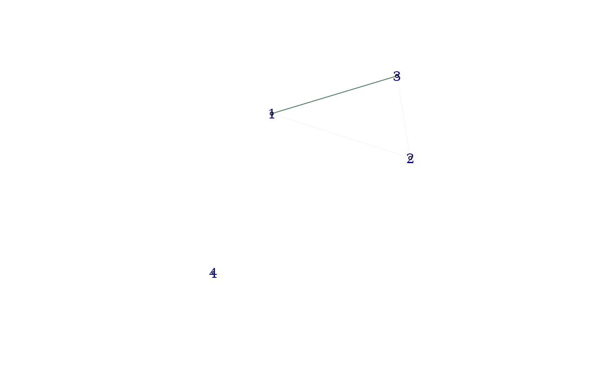

Threshold the results from a differential co-expression analysis and create a differential network.
dcNetwork(dcscores, dcpvals = NULL, thresh = NULL, ...)a matrix, the result of the dcScore function. The
results should be passed as produced by the function and not modified in
intermediate steps
a matrix or NULL, raw or adjusted p-values resulting from
dcTest or dcAdjust respectively. Should be left NULL only if
method is EBcoexpress or DiffCoEx
a numeric, threshold to apply. If NULL, defaults to 0.1
for methods that generate a p-value, 0.9 for posterior probabilities from
EBcoexpress and 0.1 on the absolute score from DiffCoEx
see details
an igraph object, representing the differential network. Scores are added as edge attributes with the name 'score'
No extra arguments required for this function. The ellipsis are used to allow flexibility in pipelines.
#create data
set.seed(360)
x <- matrix(rnorm(120), 4, 30)
cond <- rep(1:2, 15)
#perform analysis - z-score
zscores <- dcScore(x, cond)
pvals <- dcTest(zscores, emat = x, condition = cond)
pvals <- dcAdjust(pvals, p.adjust, method = 'fdr')
ig <- dcNetwork(zscores, pvals, 0.1)
#perform analysis - DiffCoEx
dcscores <- dcScore(x, cond, dc.method = 'diffcoex')
ig <- dcNetwork(dcscores, thresh = 0.001)
#plot the resulting differential co-expression network
igraph::plot.igraph(ig)
